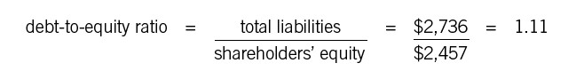

Leverage Ratios
The Balancing Act
Leverage ratios let you see how—and how extensively—a company uses debt. Debt is a loaded word for many people: it conjures up images of credit cards, interest payments, an enterprise in hock to the bank. But consider the analogy with home ownership. As long as a family takes on a mortgage it can afford, debt allows the family to live in a house that it might otherwise never be able to own. What’s more, homeowners can deduct the interest paid on the debt from their taxable income, making it even cheaper to own that house. So it is with a business: debt allows a company to grow beyond what its invested capital alone would allow, and indeed to earn profits that expand its equity base. A business can also deduct interest payments on debt from its taxable income. The financial analyst’s word for debt is leverage. The implication of the term is that a business can use a modest amount of capital to build up a larger amount of assets through debt to run the business, just the way a person using a lever can move a larger weight than she otherwise could.
The term leverage is actually defined in two ways in business—operating leverage and financial leverage. The ideas are related but different. Operating leverage is the ratio between fixed costs and variable costs; increasing your operating leverage means adding to fixed costs with the objective of reducing variable costs. A retailer that occupies a bigger, more efficient store and a manufacturer that builds a bigger, more productive factory are both increasing their fixed costs. But they hope to reduce their variable costs, because the new collection of assets is more efficient than the old. These are examples of operating leverage. Financial leverage, by contrast, simply means the extent to which a company’s asset base is financed by debt.
Leverage of either kind makes it possible for a company to make more money, but it also increases risk. The airline industry is an example of a business with high operating leverage—all those airplanes!—and high financial leverage, since most of the planes are financed through debt. The combination creates enormous risk, because if revenue drops off for any reason, the companies are not easily able to cut those fixed costs. That’s pretty much what happened after September 11, 2001. The airlines were forced to shut down for a couple of weeks, and the industry lost billions of dollars in just that short time.
Here we will focus only on financial leverage, and we’ll look at just two ratios: debt-to-equity and interest coverage.
DEBT-TO-EQUITY
The debt-to-equity ratio is simple and straightforward: it tells how much debt the company has for every dollar of shareholders’ equity. The formula and sample calculation look like this:

(Note that this ratio isn’t usually expressed in percentage terms.) Both these numbers come from the balance sheet.
What’s a good debt-to-equity ratio? As with most ratios, the answer depends on the industry. But many, many companies have a debt-to-equity ratio considerably larger than 1—that is, they have more debt than equity. Since the interest on debt is deductible from a company’s taxable income, plenty of companies use debt to finance at least a part of their business. In fact, companies with particularly low debt-to-equity ratios may be targets for a leveraged buyout, in which management or other investors use debt to buy up the stock.
Bankers love the debt-to-equity ratio. They use it to determine whether or not to offer a company a loan. They know from experience what a reasonable debt-to-equity ratio is for a company of a given size in a particular industry (and, of course, they check out profitability, cash flow, and other measures as well). For a manager, knowing the debt-to-equity ratio and how it compares with those of competitors is a handy gauge of how senior management is likely to feel about taking on more debt. If the ratio is high, raising more cash through borrowing could be difficult. So expansion could require more equity investment.
INTEREST COVERAGE
Bankers love this one, too. It’s a measure of the company’s “interest exposure”—how much interest it has to pay every year—relative to how much it’s making. The formula and calculation look like this:
In other words, the ratio shows how easy it will be for the company to pay its interest. A ratio that gets too close to 1 is obviously a bad sign: most of a company’s profit is going to pay off interest! A high ratio is generally a sign that the company can afford to take on more debt—or at least that it can make the payments.
What happens when either of these ratios heads too far in the wrong direction—that is, too high for debt-to-equity and too low for interest coverage? We’d like to think that senior management’s response is always to focus on paying off debt, so as to get both ratios back into a reasonable range. But financial artists often have different ideas. There’s a wonderful little invention called an operating lease, for instance, which is widely used in the airline industry and others. Rather than buying equipment such as an airplane outright, a company leases it from an investor. The lease payments count as an expense on the income statement, but there is no asset and no debt related to that asset on a company’s books. Some companies that are already overleveraged are willing to pay a premium to lease equipment just to keep these two ratios in the area that bankers and investors like to see. If you want to get a complete sense of your company’s indebtedness, by all means calculate the ratios—but ask someone in finance if the company uses any debtlike instruments such as operating leases as well.